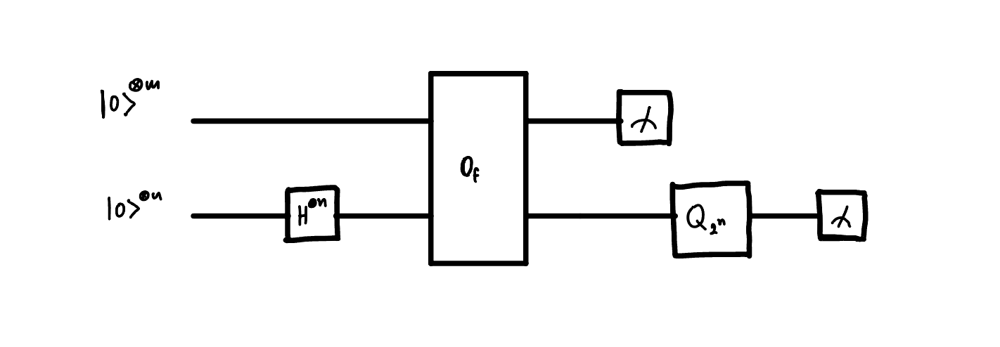

Chapter 5: Shor's Algorithm:
5.1 Introduction:
Problem: Given an integer \(N\), output a factor \(1 < K < N\). with any chosen constant level of probability \((1-\epsilon)\), and the algorithm will run in polynomial time \(O(n^3)\).
5.2. Factoring as a periodicity problem:
Theorem: (Euler's theorem) If \(a\) and \(N\) are coprime, then there is a least power \(1<r<N\) such that \(a^r\equiv 1 \pmod{N}\).
Then we can show that \(f(k) = a^k \pmod{N}\) is periodic with period \(r\). This is because \(f(k + r) = a^{k+r} \pmod{N} = a^k a^r \pmod{N} = a^k \pmod{N} = f(k)\).
Suppose we find the period \(r\) of \(f(k)\) and this period \(r\) is even. Then we can re-write our original statement as:
\(N\) does not divide \(a^{r/2} - 1\), therefore \(N\) must either - divide \(a^{r/2} + 1\) - or it must partly divide into \(a^{r/2} + 1\) and partly into \(a^{r/2} - 1\)
Therefore if it partly divides into \(a^{r/2} + 1\) we can use classically efficient euclids algorithm \(gcd(a^{r/2} + 1, N)\) to find a non-trivial factor of \(N\).
So we have shown that if we pick \(a\) at random then if we by chance of luck also find that \(r\) is even, and \(a^{r/2}+1\) is not divisible by \(N\), then we can classically find a non-trivial factor of \(N\).
Theorem: Suppose \(N\) is odd and not a power of a prime. If \(a<N\) is chosen unifromly at random with gcd(a,N)=1 then \(Prob(\text{r is even and } a^{r/2}\not\equiv -1 \pmod{N})\) is at least \(1/2\).
5.3. Algorithm:
- Is N even? If so, output 2 and stop (efficient classical algorithm)
- Check whether N is a prime power (efficient classical algorithm)
- Choose \(a\) at random from 1 to \(N-1\) and compute \(gcd(a,N)\). If \(gcd(a,N) \neq 1\) then we are done. (efficient classical algorithm)
- If s=1 find the period r of the sequence \(a^k \pmod{N}\) (quantum part)
- If r is odd, go back to step 3
- If \(a^{r/2} \equiv -1 \pmod{N}\) go back to step 3 (efficient classical algorithm)
- Otherwise \(gcd(a^{r/2} + 1, N)\) and \(gcd(a^{r/2} - 1, N)\) are non-trivial factors of \(N\) (efficient classical algorithm)
5.4. Circuit:
In the end what we need to do is to find the period \(r\) of the sequence \(a^k \pmod{N}\). The circuit should be the same as the one for period finding algorithm. What we want to show is that each block of this circuit can be implemented efficiently.

We have already shown that the QFT can be implemented efficiently. The bit oracle \(O_f\) can be implemented efficiently if we have a circuit for \(f(k) = a^k \pmod{N}\).